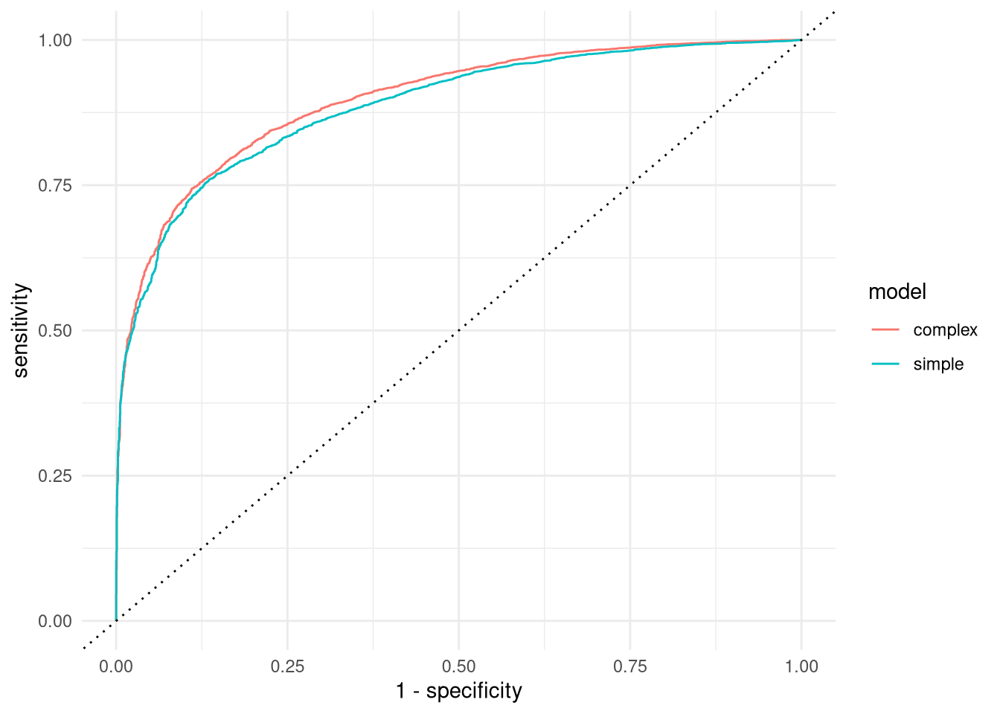

# Install required packages if not already installed
required_pkgs <- c("ucimlrepo", "keras3", "tidymodels","reticulate")
installed_pkgs <- rownames(installed.packages())
for(pkg in required_pkgs){
if (!(pkg %in% installed_pkgs)){
install.packages(pkg)
}
}Adult Income Classification
Setup
library(tidymodels)── Attaching packages ────────────────────────────────────── tidymodels 1.3.0 ──✔ broom 1.0.8 ✔ recipes 1.2.1
✔ dials 1.4.0 ✔ rsample 1.3.0
✔ dplyr 1.1.4 ✔ tibble 3.2.1
✔ ggplot2 3.5.2 ✔ tidyr 1.3.1
✔ infer 1.0.7 ✔ tune 1.3.0
✔ modeldata 1.4.0 ✔ workflows 1.2.0
✔ parsnip 1.3.1 ✔ workflowsets 1.1.0
✔ purrr 1.0.4 ✔ yardstick 1.3.2── Conflicts ───────────────────────────────────────── tidymodels_conflicts() ──
✖ purrr::discard() masks scales::discard()
✖ dplyr::filter() masks stats::filter()
✖ dplyr::lag() masks stats::lag()
✖ recipes::step() masks stats::step()library(keras3)
Attaching package: 'keras3'The following object is masked from 'package:yardstick':
get_weights#Assuming you have a Python virtualenv called "ml_learn"
# with the keras and jax python packages installed
#You can set this up with
#
# library(reticulate)
# install_python("3.12:latest")
# virtualenv_create("ml_learn",packages=c("keras","jax"))
#
# In fact this should not be necessary. Just installing
# the keras3 R package and running
#
# install_keras(backend="jax")
#
# should be enough. And you won't then need to choose
# a virtualenv below. But somehow that didn't work for me
keras3::use_backend("jax")
keras3::use_virtualenv("ml_learn")# Set random seed to ensure reproducibility
keras3::set_random_seed(100)Warning in value[[3L]](cond): failed setting experimental_enable_numpy_behavior# Fetch the data from the UCI ML repo over the net
adult <- ucimlrepo::fetch_ucirepo("adult")# Extract the data frame with all the variables
raw_df <- adult$data$originalraw_df |> glimpse()Rows: 48,842
Columns: 15
$ age <int> 39, 50, 38, 53, 28, 37, 49, 52, 31, 42, 37, 30, 23, 3…
$ workclass <chr> "State-gov", "Self-emp-not-inc", "Private", "Private"…
$ fnlwgt <int> 77516, 83311, 215646, 234721, 338409, 284582, 160187,…
$ education <chr> "Bachelors", "Bachelors", "HS-grad", "11th", "Bachelo…
$ `education-num` <int> 13, 13, 9, 7, 13, 14, 5, 9, 14, 13, 10, 13, 13, 12, 1…
$ `marital-status` <chr> "Never-married", "Married-civ-spouse", "Divorced", "M…
$ occupation <chr> "Adm-clerical", "Exec-managerial", "Handlers-cleaners…
$ relationship <chr> "Not-in-family", "Husband", "Not-in-family", "Husband…
$ race <chr> "White", "White", "White", "Black", "Black", "White",…
$ sex <chr> "Male", "Male", "Male", "Male", "Female", "Female", "…
$ `capital-gain` <int> 2174, 0, 0, 0, 0, 0, 0, 0, 14084, 5178, 0, 0, 0, 0, 0…
$ `capital-loss` <int> 0, 0, 0, 0, 0, 0, 0, 0, 0, 0, 0, 0, 0, 0, 0, 0, 0, 0,…
$ `hours-per-week` <int> 40, 13, 40, 40, 40, 40, 16, 45, 50, 40, 80, 40, 30, 5…
$ `native-country` <chr> "United-States", "United-States", "United-States", "U…
$ income <chr> "<=50K", "<=50K", "<=50K", "<=50K", "<=50K", "<=50K",…Preprocessing
raw_df |> count(income) income n
1 <=50K 24720
2 <=50K. 12435
3 >50K 7841
4 >50K. 3846raw_df <- raw_df |>
mutate(income = case_when(
income == "<=50K." ~ "<=50K",
income == ">50K." ~ ">50K",
TRUE ~ income
))
raw_df |> count(income) income n
1 <=50K 37155
2 >50K 11687raw_df <- raw_df |>
select(-`capital-gain`,-`capital-loss`)# Test-training split. `initial_split` returns an object
# from which we extract the test and training dataframes
my_split <- initial_split(raw_df,0.8)
my_train <- training(my_split)
my_test <- testing(my_split)# The preprocessing step
#
# Normalize all numeric predictors
# One-hot encode (make dummies) for all categorical variables
# Handle correctly categorical values in new
# data which are not in the training set
my_recipe <- recipe(income~.,data=my_train) |>
step_normalize(all_numeric_predictors()) |>
step_novel(all_nominal_predictors()) |>
step_dummy(all_nominal_predictors(),one_hot=TRUE)# Prep the recipe and apply it to train and text data
my_prep <- my_recipe |> prep()
my_train_mod <- my_prep |> bake(my_train)
my_test_mod <- my_prep |> bake(my_test)# Define function to convert income labels to and from num
inc_to_num <- function(x){
as.numeric(x==">50K")
}
num_to_inc <- function(x){
factor(if_else(x==1,">50K","<=50K"),
levels=c("<=50K",">50K"))
}# Separate predictors and outcome
# Convert outcome to numeric
X_train <- my_train_mod |> select(-income)
y_train <- my_train_mod |> pull(income) |> inc_to_num()
X_test <- my_test_mod |> select(-income)
y_test <- my_test_mod |> pull(income) |> inc_to_num()Simple model
This is a model equivalent to a logit model.
input_dim = ncol(X_train)Model defintion
model_simple <- keras_model_sequential(input_shape=input_dim) |>
layer_dense(units=1,activation="sigmoid")
summary(model_simple)Model: "sequential"
┏━━━━━━━━━━━━━━━━━━━━━━━━━━━━━━━━━━━┳━━━━━━━━━━━━━━━━━━━━━━━━━━┳━━━━━━━━━━━━━━━┓
┃ Layer (type) ┃ Output Shape ┃ Param # ┃
┡━━━━━━━━━━━━━━━━━━━━━━━━━━━━━━━━━━━╇━━━━━━━━━━━━━━━━━━━━━━━━━━╇━━━━━━━━━━━━━━━┩
│ dense (Dense) │ (None, 1) │ 118 │
└───────────────────────────────────┴──────────────────────────┴───────────────┘
Total params: 118 (472.00 B)
Trainable params: 118 (472.00 B)
Non-trainable params: 0 (0.00 B)Compilation
model_simple |> compile(
loss = "binary_crossentropy",
optimizer = "adam",
metrics = c('accuracy'),
)Fitting
history_simple <- model_simple |> fit(
as.matrix(X_train), y_train,
epochs = 20, batch_size = 512,
validation_split = 0.2
)Epoch 1/20
62/62 - 1s - 12ms/step - accuracy: 0.4829 - loss: 0.7325 - val_accuracy: 0.5969 - val_loss: 0.6570
Epoch 2/20
62/62 - 0s - 2ms/step - accuracy: 0.6577 - loss: 0.6116 - val_accuracy: 0.7150 - val_loss: 0.5660
Epoch 3/20
62/62 - 0s - 942us/step - accuracy: 0.7383 - loss: 0.5402 - val_accuracy: 0.7617 - val_loss: 0.5092
Epoch 4/20
62/62 - 0s - 839us/step - accuracy: 0.7687 - loss: 0.4938 - val_accuracy: 0.7821 - val_loss: 0.4703
Epoch 5/20
62/62 - 0s - 685us/step - accuracy: 0.7828 - loss: 0.4617 - val_accuracy: 0.7939 - val_loss: 0.4429
Epoch 6/20
62/62 - 0s - 652us/step - accuracy: 0.7956 - loss: 0.4387 - val_accuracy: 0.8037 - val_loss: 0.4229
Epoch 7/20
62/62 - 0s - 679us/step - accuracy: 0.8019 - loss: 0.4216 - val_accuracy: 0.8093 - val_loss: 0.4078
Epoch 8/20
62/62 - 0s - 681us/step - accuracy: 0.8088 - loss: 0.4087 - val_accuracy: 0.8147 - val_loss: 0.3963
Epoch 9/20
62/62 - 0s - 656us/step - accuracy: 0.8128 - loss: 0.3988 - val_accuracy: 0.8183 - val_loss: 0.3874
Epoch 10/20
62/62 - 0s - 682us/step - accuracy: 0.8162 - loss: 0.3910 - val_accuracy: 0.8219 - val_loss: 0.3801
Epoch 11/20
62/62 - 0s - 613us/step - accuracy: 0.8200 - loss: 0.3848 - val_accuracy: 0.8251 - val_loss: 0.3743
Epoch 12/20
62/62 - 0s - 659us/step - accuracy: 0.8224 - loss: 0.3797 - val_accuracy: 0.8278 - val_loss: 0.3696
Epoch 13/20
62/62 - 0s - 675us/step - accuracy: 0.8241 - loss: 0.3756 - val_accuracy: 0.8298 - val_loss: 0.3656
Epoch 14/20
62/62 - 0s - 646us/step - accuracy: 0.8255 - loss: 0.3722 - val_accuracy: 0.8322 - val_loss: 0.3623
Epoch 15/20
62/62 - 0s - 691us/step - accuracy: 0.8265 - loss: 0.3694 - val_accuracy: 0.8338 - val_loss: 0.3595
Epoch 16/20
62/62 - 0s - 706us/step - accuracy: 0.8275 - loss: 0.3671 - val_accuracy: 0.8345 - val_loss: 0.3571
Epoch 17/20
62/62 - 0s - 663us/step - accuracy: 0.8287 - loss: 0.3651 - val_accuracy: 0.8347 - val_loss: 0.3552
Epoch 18/20
62/62 - 0s - 687us/step - accuracy: 0.8293 - loss: 0.3634 - val_accuracy: 0.8349 - val_loss: 0.3535
Epoch 19/20
62/62 - 0s - 697us/step - accuracy: 0.8297 - loss: 0.3620 - val_accuracy: 0.8362 - val_loss: 0.3520
Epoch 20/20
62/62 - 0s - 682us/step - accuracy: 0.8305 - loss: 0.3608 - val_accuracy: 0.8374 - val_loss: 0.3508Evaluation
model_simple |>
evaluate(as.matrix(X_test),y_test)306/306 - 0s - 1ms/step - accuracy: 0.8317 - loss: 0.3567$accuracy
[1] 0.8317125
$loss
[1] 0.3566851Multilayer model
A multilayer perceptron with two layers and dropout. You should experiment with architecture and parameters.
Model definition
model_mlp <- keras_model_sequential(input_shape=input_dim) |>
layer_dense(units=128,activation='relu') |>
layer_dense(units=8,activation='relu') |>
layer_dense(units=8,activation='relu') |>
layer_dense(units=1,activation="sigmoid")
model_mlp |> compile(
loss = "binary_crossentropy",
optimizer = "adam",
metrics = c('accuracy'),
)
summary(model_mlp)Model: "sequential_1"
┏━━━━━━━━━━━━━━━━━━━━━━━━━━━━━━━━━━━┳━━━━━━━━━━━━━━━━━━━━━━━━━━┳━━━━━━━━━━━━━━━┓
┃ Layer (type) ┃ Output Shape ┃ Param # ┃
┡━━━━━━━━━━━━━━━━━━━━━━━━━━━━━━━━━━━╇━━━━━━━━━━━━━━━━━━━━━━━━━━╇━━━━━━━━━━━━━━━┩
│ dense_1 (Dense) │ (None, 128) │ 15,104 │
├───────────────────────────────────┼──────────────────────────┼───────────────┤
│ dense_2 (Dense) │ (None, 8) │ 1,032 │
├───────────────────────────────────┼──────────────────────────┼───────────────┤
│ dense_3 (Dense) │ (None, 8) │ 72 │
├───────────────────────────────────┼──────────────────────────┼───────────────┤
│ dense_4 (Dense) │ (None, 1) │ 9 │
└───────────────────────────────────┴──────────────────────────┴───────────────┘
Total params: 16,217 (63.35 KB)
Trainable params: 16,217 (63.35 KB)
Non-trainable params: 0 (0.00 B)Fitting
We use early stopping to stop the training when validation loss stops improving.
early_stopping <- callback_early_stopping(
monitor = "val_loss",
patience = 5,
restore_best_weights=TRUE
)
history_mlp <- model_mlp |> fit(
as.matrix(X_train), y_train,
epochs = 50, batch_size = 512,
validation_split = 0.2,
callbacks = list(early_stopping)
)Epoch 1/50
62/62 - 1s - 20ms/step - accuracy: 0.7595 - loss: 0.5225 - val_accuracy: 0.8347 - val_loss: 0.3658
Epoch 2/50
62/62 - 0s - 5ms/step - accuracy: 0.8324 - loss: 0.3576 - val_accuracy: 0.8458 - val_loss: 0.3364
Epoch 3/50
62/62 - 0s - 2ms/step - accuracy: 0.8367 - loss: 0.3471 - val_accuracy: 0.8445 - val_loss: 0.3331
Epoch 4/50
62/62 - 0s - 2ms/step - accuracy: 0.8403 - loss: 0.3428 - val_accuracy: 0.8468 - val_loss: 0.3325
Epoch 5/50
62/62 - 0s - 2ms/step - accuracy: 0.8415 - loss: 0.3400 - val_accuracy: 0.8472 - val_loss: 0.3302
Epoch 6/50
62/62 - 0s - 3ms/step - accuracy: 0.8425 - loss: 0.3384 - val_accuracy: 0.8473 - val_loss: 0.3294
Epoch 7/50
62/62 - 0s - 3ms/step - accuracy: 0.8428 - loss: 0.3363 - val_accuracy: 0.8473 - val_loss: 0.3296
Epoch 8/50
62/62 - 0s - 2ms/step - accuracy: 0.8442 - loss: 0.3348 - val_accuracy: 0.8475 - val_loss: 0.3306
Epoch 9/50
62/62 - 0s - 2ms/step - accuracy: 0.8438 - loss: 0.3344 - val_accuracy: 0.8459 - val_loss: 0.3311
Epoch 10/50
62/62 - 0s - 2ms/step - accuracy: 0.8452 - loss: 0.3324 - val_accuracy: 0.8479 - val_loss: 0.3293
Epoch 11/50
62/62 - 0s - 2ms/step - accuracy: 0.8465 - loss: 0.3309 - val_accuracy: 0.8490 - val_loss: 0.3292
Epoch 12/50
62/62 - 0s - 2ms/step - accuracy: 0.8460 - loss: 0.3307 - val_accuracy: 0.8468 - val_loss: 0.3310
Epoch 13/50
62/62 - 0s - 1ms/step - accuracy: 0.8466 - loss: 0.3285 - val_accuracy: 0.8480 - val_loss: 0.3304
Epoch 14/50
62/62 - 0s - 1ms/step - accuracy: 0.8480 - loss: 0.3268 - val_accuracy: 0.8489 - val_loss: 0.3292
Epoch 15/50
62/62 - 0s - 2ms/step - accuracy: 0.8482 - loss: 0.3257 - val_accuracy: 0.8482 - val_loss: 0.3312
Epoch 16/50
62/62 - 0s - 3ms/step - accuracy: 0.8485 - loss: 0.3243 - val_accuracy: 0.8479 - val_loss: 0.3321Evaluation
model_mlp |>
evaluate(as.matrix(X_test),y_test)306/306 - 0s - 1ms/step - accuracy: 0.8410 - loss: 0.3357$accuracy
[1] 0.8410277
$loss
[1] 0.3356866Evaluation with yardstick
Prepare the evaluation dataframes
# Compute the predicted probabilities and the predicted class
# from the model
y_test_prob_mlp <- model_mlp |>
predict(as.matrix(X_test)) 306/306 - 0s - 493us/stepy_test_class_mlp <- as.numeric(y_test_prob_mlp[,1] > 0.5)
y_test_prob_simple <- model_simple |>
predict(as.matrix(X_test)) 306/306 - 0s - 429us/stepy_test_class_simple <- as.numeric(y_test_prob_simple[,1] > 0.5)# Create dataframes
eval_df_mlp <- tibble(truth=num_to_inc(y_test),
prob1 = 1-y_test_prob_mlp[,1],
estimate=num_to_inc(y_test_class_mlp))
eval_df_simple <- tibble(truth=num_to_inc(y_test),
prob1 = 1-y_test_prob_simple[,1],
estimate=num_to_inc(y_test_class_simple))Confusion matrices
Simple model
conf_mat(eval_df_simple,truth="truth",estimate="estimate") Truth
Prediction <=50K >50K
<=50K 6954 1170
>50K 474 1171Complex model
conf_mat(eval_df_mlp,truth="truth",estimate="estimate") Truth
Prediction <=50K >50K
<=50K 6925 1050
>50K 503 1291Recall
The proportion of <=50K who are identified as greater <=50K
Simple model
recall(eval_df_simple,truth,estimate) |> pull(.estimate)[1] 0.9361874Complex model
recall(eval_df_mlp,truth,estimate) |> pull(.estimate)[1] 0.9322833Precision
Simple model
Percentage of predicted <=50K who are actually <=50K
precision(eval_df_simple,truth,estimate) |>
pull(.estimate)[1] 0.8559823Complex model
precision(eval_df_mlp,truth,estimate)|>
pull(.estimate)[1] 0.8683386F-measure
Harmonic mean of precision and recall
Simple model
f_meas(eval_df_simple,truth,estimate) |>
pull(.estimate)[1] 0.8942901Complex model
f_meas(eval_df_mlp,truth,estimate) |>
pull(.estimate)[1] 0.8991755ROC curve
Above, we choose our predicted class based on a threshold probability of 0.5. But suppose we chose some other threshold probability. As we lowered the probability, more cases would get put into the second class, both rightly and wrongly. By moving the threshold from 0 to 1 we trace out a frontier of true positive rate vs. false positive rate. A curve which is outward of another indicates a better model. Pure random guessing gives a 45-degree line.
Specificity: probability of a true positive (<=50K classed as <=50K)
Sensitivity: probability of a true negative (>50K classed as >=50K)
theme_set(theme_minimal())
roc_simple <- roc_curve(eval_df_simple,truth,prob1)
roc_simple$model="simple"
roc_mlp <- roc_curve(eval_df_mlp,truth,prob1)
roc_mlp$model="complex"
bind_rows(roc_simple,roc_mlp) |>
ggplot() +
geom_path(aes(1-specificity,sensitivity,col=model)) +
geom_abline(lty=3)